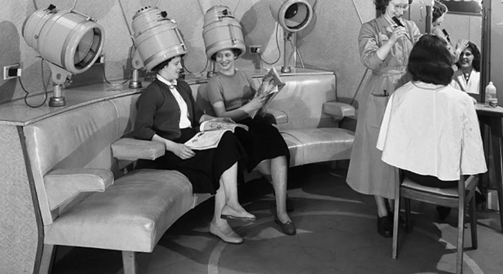
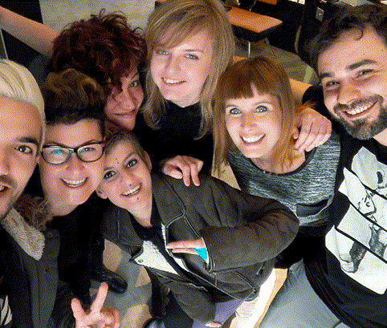

Más de 25 años dedicados a la peluquería, la estética y el bienestar. Un camino de crecimiento, formación y compromiso con la belleza natural.

Trasquilón nació en octubre de 1995 en la ciudad de Reus, con la vocación de ofrecer un servicio de peluquería diferente: personalizado, cercano y centrado en la calidad del trato y los productos.
Desde el primer día, la formación continua y la escucha activa del cliente han sido los pilares del negocio, valores que se han mantenido intactos a lo largo de más de tres décadas.
Nace el primer salón Trasquilón en la ciudad de Reus, con la vocación de ofrecer un servicio de peluquería personalizado y de calidad.
Nueve años después, abrimos nuestro segundo centro en la zona comercial de Tarragona, en el Carrer de Soler 7, ampliando nuestra presencia en la provincia.
Un punto de inflexión: adoptamos en exclusiva los productos Aveda, la marca profesional de referencia en cosmética natural del grupo Estée Lauder. Belleza, bienestar y respeto por el medio ambiente se convierten en nuestra seña de identidad.
Abrimos nuestra tercera sede en Salou, consolidando la presencia de Trasquilón en la provincia de Tarragona y acercando nuestros servicios a una nueva zona.

El equipo de Trasquilón se forma de manera continua en las últimas técnicas de peluquería, coloración y estética. Cada profesional aporta su experiencia y creatividad al servicio de una atención personalizada.
Participamos regularmente en eventos del sector, ferias profesionales y formaciones de Aveda para mantenernos a la vanguardia de la peluquería y la belleza.